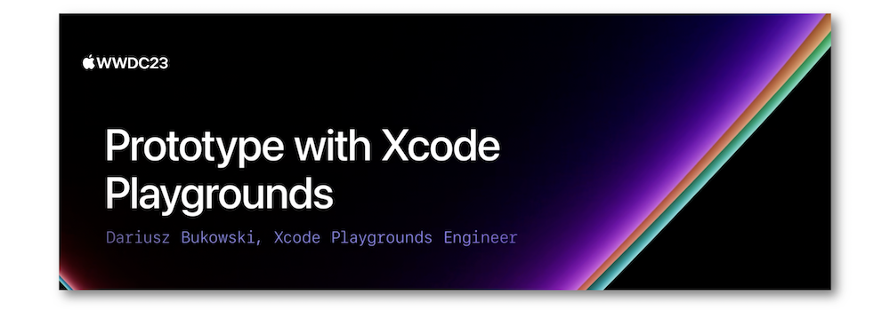
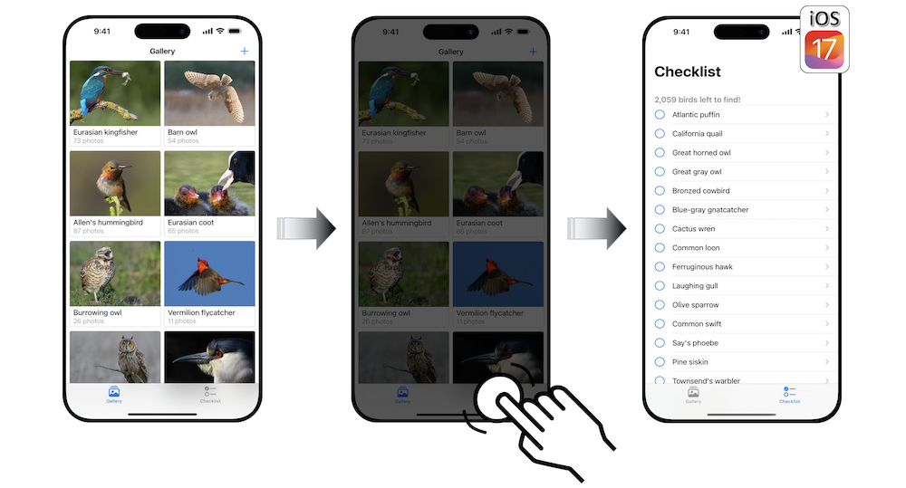
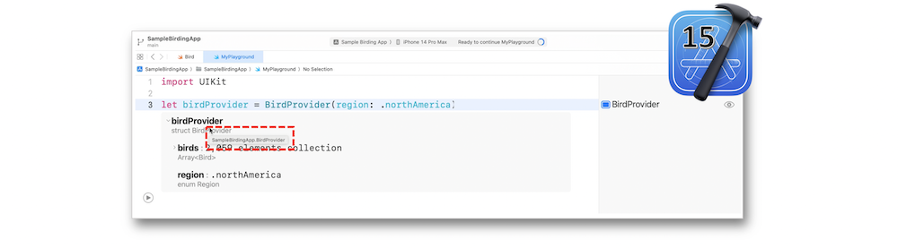
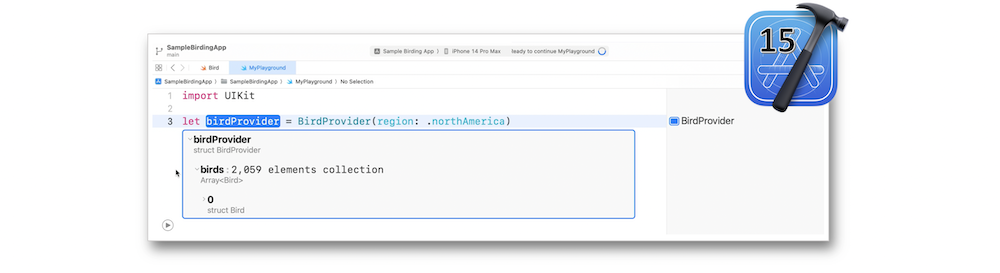
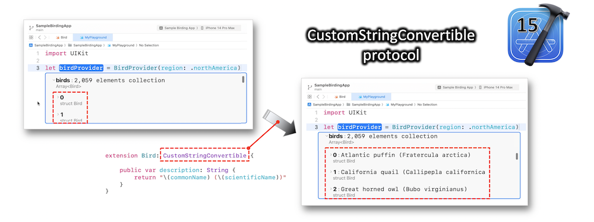
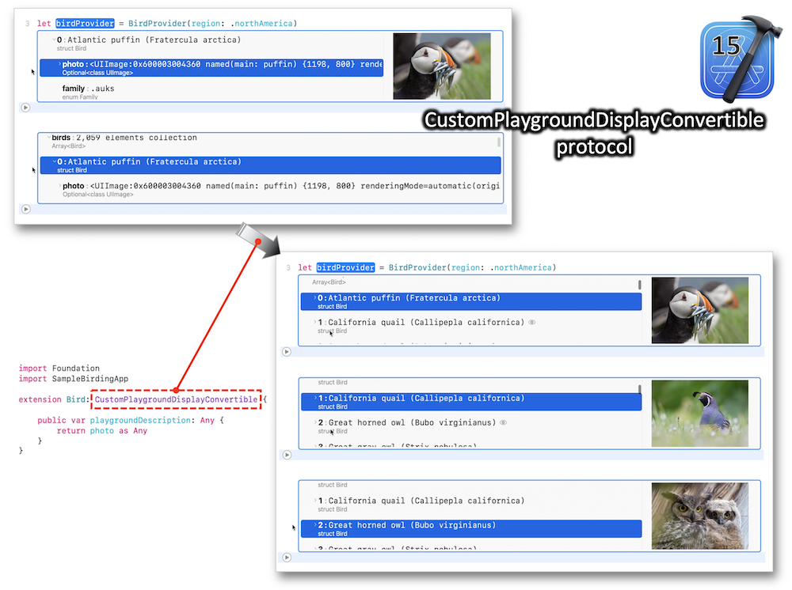
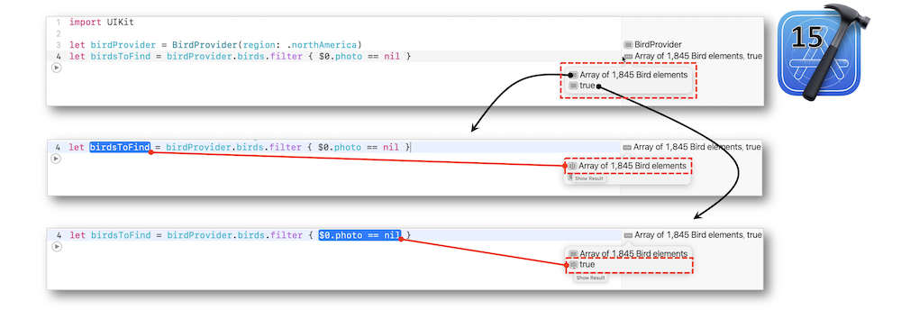
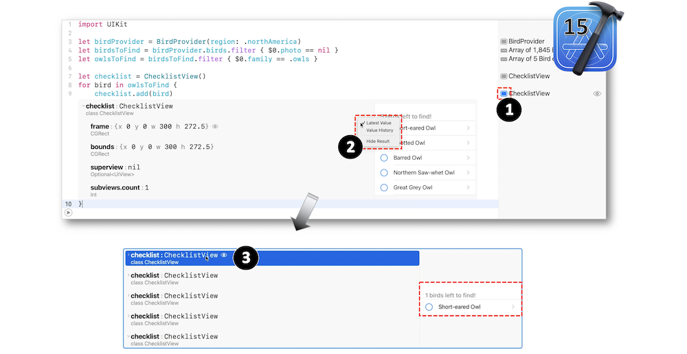
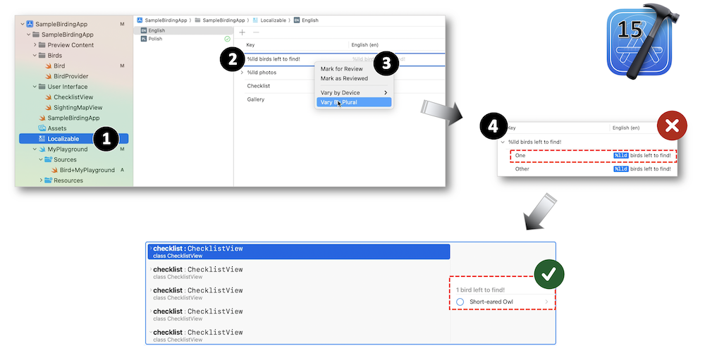
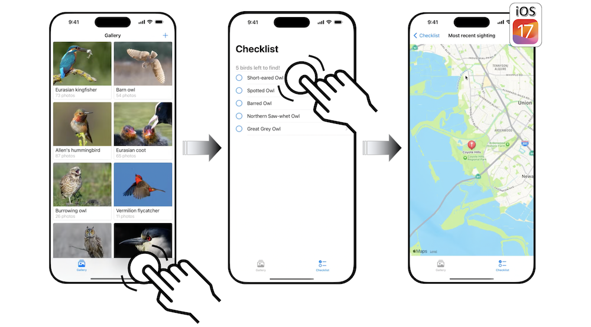

WWDC 2023: Prototype with Xcode Playgrounds
Find hereafter a detailed summary of a video that belongs to a taxonomy of some WWDC footages.
The original video is available on the Apple official website (session 10250).

"Speed up feature development by prototyping new code with Xcode Playgrounds, eliminating the need to keep rebuilding and relaunching your project to verify your changes. We'll show you how using a playground in your project or package can help you try out your code in various scenarios and take a close look at the returned values, including complex structures and user interface elements, so you can quickly iterate on a feature before integrating it into your project."
Hereafter, the underlined elements lead directly to the playback of the WWDC video at the appropriate moment.
Overview #
The entire presentation is based on a basic app that will be enhanced to achieve specific goals and become much more efficient.

A playground is an interactive environment in which code can be written and executed while real-time results are displayed nearby.
The Xcode Playgrounds streamline the code writing and save time through skipping a project rebuild and relaunch while easily testing some code snippets.
Starting a new Xcode playground is quite easy with its running speed up and its defaults settings.
Type information #
New in Xcode 15, a brief detail of each row is highlighted through the inline result item.

Source code #
Xcode 15 points out the source code that produces the displayed result.

Protocols #
Instead of having elements with empty labels, a description can be added thanks to the CustomStringConvertible protocol.

The CustomPlaygroundDisplayConvertible protocol is the best way to show an element description dedicated to the playground representation.

Filters #
Hovering over the different inline results will toggle some highlight in their source code ranges.

New in Xcode 15, the user interface provides a split view to improve the display of the history values.

The new string catalog is also an efficient way to offer a reliable solution for some specific downsides.

Maps #
Using an Xcode playground for maps requires some cautions for a better experience:
-
When retrieving documentation, providing code examples that can be easily used in a playground is a great way to save time.
-
In order to avoid needless calls, it might be interesting to activate the manual mode of playground execution.
-
The source editor gutter points out the lines to be executed.
-
Using the playgrounds live view involves some mandatory items to be applied.
-
The eye icon in the sidebar might be of a great help regarding a map view troubleshooting.
-
Activate the
Live Viewthrough theEditor Options.
Following the preceding logic results in the final app with efficient code writing made possible by the Xcode Playgrounds.
